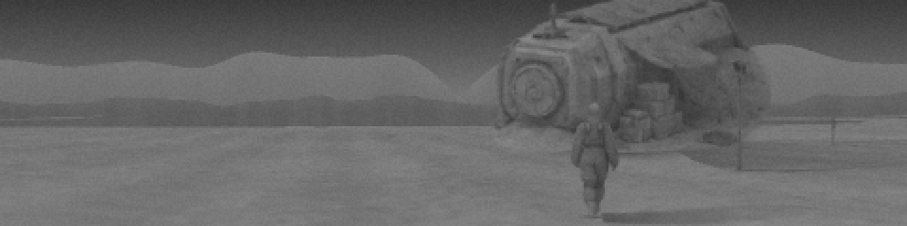

MISSIONERS
прототип · одиночная игра и сетевые планеты
ЧТО ПРОИСХОДИТ
39 лет назад автономная станция ARK-041 села на далёкую планету. Корпорации, которая её отправила, больше нет, но станция всё ещё работает и всё это время выращивала миссионеров — биомашины с датчиками — без оператора.
Сохранился доступ к старому каналу связи: быстрее света, практически без задержки, 512 бит/с. Это единственный способ узнать, что происходит на планете. Всё, что видно на экране, физически прошло через этот канал.
КАНАЛ СВЯЗИ
У всех данных есть реальный размер, и всё идёт через один канал: описание окружения — около 200 байт, лидар — 87, кадр 32×32 — около 1,3 КБ, то есть полминуты канала. Несколько запросов встают в очередь; подписки (телеметрия, пульс станции) едят полосу постоянно.
МИССИОНЕРЫ
Миссионеру указывают, куда идти, что изучить, с чем взаимодействовать; движение и действие он выполняет сам, между отсчётами телеметрии данных о теле нет. Рефлексы на контакт и на потерю несущей задаются заранее — канал для реакции слишком медленный. Биоматериала на станции хватает ещё на четыре тела, по три минуты каждое.
ИССЛЕДОВАНИЕ
Обычной игровой камеры нет: планета исследуется по описаниям окружения, лидару, телеметрии и кадрам. Карта заполняется только тем, что уже обнаружено. Кадр — самое дорогое и самое честное: кто перед телом, видно только на нём.
ПЛАНЕТА
Первая карта — «Первый акт»: несколько мест вокруг станции и расщелина в гряде, примерно на час; в старых записях — миссия, из которой один миссионер не вернулся. Вторая — «Две станции»: две платформы, общий ретранслятор посередине и планшет в глубине расщелины — для двух сторон друг против друга. На обеих — стая: те же тела, выросшие без оператора; они кричат, крадут камеры, могут напасть.
Мультиплеер — одна планета на 2–4 станции ARK-041…044: у каждой свои миссионеры, запасы и свой канал, общие рельеф, предметы и стая; несколько операторов на одной станции делят её канал. Планета создаётся в лобби по коду, код — и есть приглашение. Игровое время идёт только пока открыта консоль (на сетевой планете — пока подключён хоть один оператор).
ЧТО НЕДОДЕЛАНО
- Обучения внутри консоли нет; сноски по наведению — вся подсказка. Начать стоит с «снять» в панели «Описание».
- Звука и уведомлений нет: бит «опасность» в телеметрии легко не заметить.
- В кадре объекты не меняют вид по состоянию (вскрытый ящик выглядит как целый).
- Экономики нет: биоматериал не пополняется, стая не голодает.
ЧТО РАССКАЗАТЬ ПОСЛЕ
- Где было непонятно, что делать дальше; где понятно, но не получалось.
- Пришлось ли выбирать между телеметрией и картинкой, или ожидание ничего не стоило.
- Что в интерфейсе лишнее, чего не хватает; подсказка, которая ввела в заблуждение.
- Через сколько погиб первый миссионер и от чего.